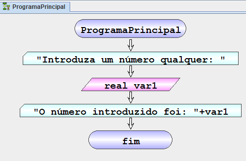

Escrever
Lê uma ou mais variáveis definida na memória a partir da consola. A instrução também permite definir novas variáveis para a memória e cujo valor é inicializado pela consola. É também possível definir uma mensagem para ser apresentada quando o valor for pedido.
| Símbolo Fluxograma |
pseudocodigo pt-PT |
|
Le [<Tipo>] <var>[,<var> …] [<mensagem>] |
• [<Tipo>] –Tipo de dados (INTEGER | REAL | LOGIC | TEXT) [Opcional]
• <var> – Nome da variável definida ou a definir em memória. O nome da variável deve seguir as seguintes regras:
o Não pode ser uma palavra reservada
o Tem de começar por uma letra (a-z; A-Z)
o Pode conter dígitos (0-9)
o Deve ser significativo daquilo que armazena
• [<mensagem>] – mensagem a ser apresentada antes da leitura das variáveis [Opcional]
Exemplo – Ler variáveis
Algoritmo que mostra algumas versões da instrução de leitura:
| Fluxograma pt-PT |
Pseudocódigo pt-PT |
|  |
inicio ProgramaPrincipal
definir inteiro a = 0,b = 0
ler a
ler inteiro c
ler a "Insira a: "
ler inteiro h "Insira h: "
ler a,b
ler inteiro d,e
ler a,b "insira a e b: "
ler inteiro f,g "insira f e g: "
fim ProgramaPrincipal
|